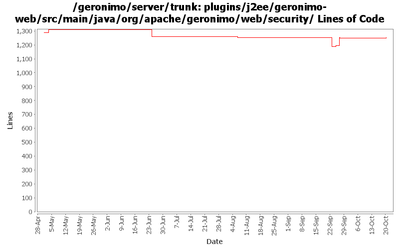

[root]/plugins/j2ee/geronimo-web/src/main/java/org/apache/geronimo/web/security

| Author | Changes | Lines of Code | Lines per Change |
|---|---|---|---|
| Totals | 26 (100.0%) | 572 (100.0%) | 22.0 |
| djencks | 6 (23.1%) | 489 (85.5%) | 81.5 |
| xuhaihong | 17 (65.4%) | 71 (12.4%) | 4.1 |
| gawor | 2 (7.7%) | 8 (1.4%) | 4.0 |
| genspring | 1 (3.8%) | 4 (0.7%) | 4.0 |
Somehow, once currentRolePatterns = new HashMap<String, URLPattern>(); is executed.currentPatterns will point to the same reference of currentRolePatterns.
Pull (currentPatterns ==null) out of the loop to avoid the unexpected logic caused by the problem above.
4 lines of code changed in 1 file:
GERONIMO-5640 Qualified web resource permission for each role should be calculated based its own url set
7 lines of code changed in 1 file:
Remove the system.out debug codes
0 lines of code changed in 1 file:
GERONIMO-5578 WebResourcePermission must be added to the corresponding role for each distinct combination in the cross-product of url-pattern and role-name (Patch from Han Hong Fang)
43 lines of code changed in 2 files:
GERONIMO-5624 fix up dynamic security constraint processing for jetty
72 lines of code changed in 1 file:
GERONIMO-5624 For jetty, overide jetty internal methods (that I just added) instead of wrapping the ServletContext.Dynamic
7 lines of code changed in 1 file:
GERONIMO-5624 patch (slightly modified) from Ivan to use info tree to merge security info from dynamic additions and annotations (this is new for jetty).
303 lines of code changed in 2 files:
Do not create AuthConstraint object while roles is empty and PermitAll is configured
2 lines of code changed in 1 file:
use right servlet class
3 lines of code changed in 1 file:
restore old code which seems to work better
5 lines of code changed in 1 file:
GERONIMO-5190 use openejb-jee jaxb tree for spec dds
107 lines of code changed in 2 files:
1. Use a full loop to find the web-fragment.xml in the embedded jar file of the bundle, might be easier once we have full ear support
2. Use the deploymentDescriptor to calculate the component permission, currently, it seems that we have no way to read the web.xml while the package is of ear type
19 lines of code changed in 1 file:
a. Calculate web permissions while starting the web module to support setServletSecurity feature in Servlet 3.0
b. Initial support ServletContainerInitializer, some improvements might be needed, such as use ASM ?
c. Support ORDERED_LIBS ServletContext attribute
0 lines of code changed in 11 files: